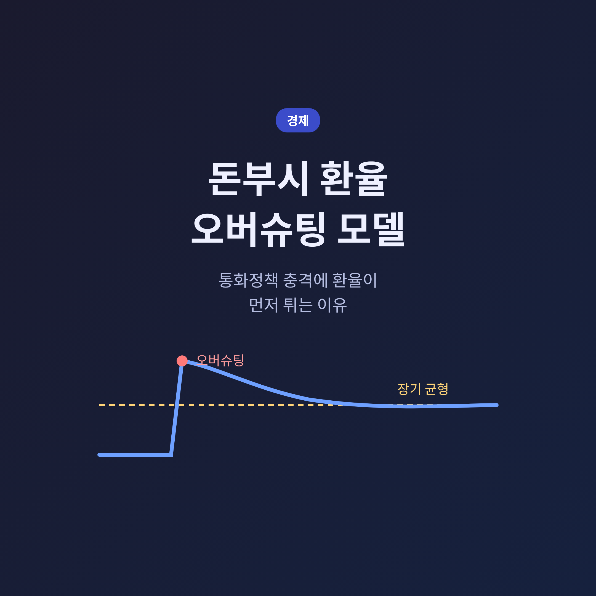
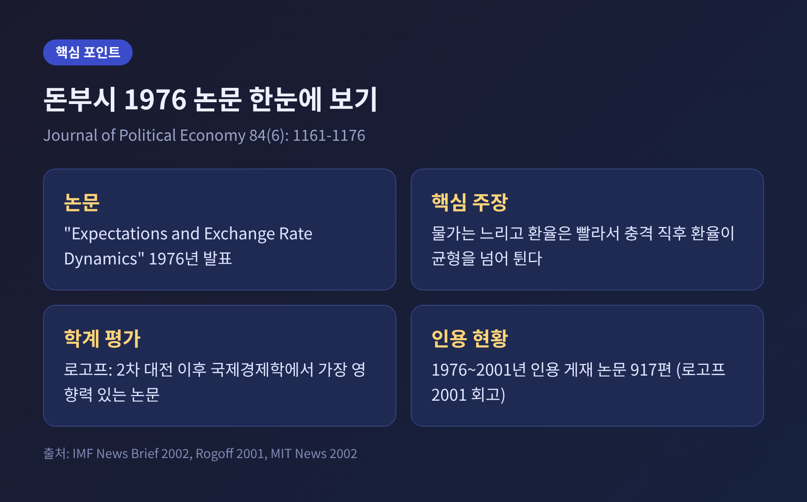
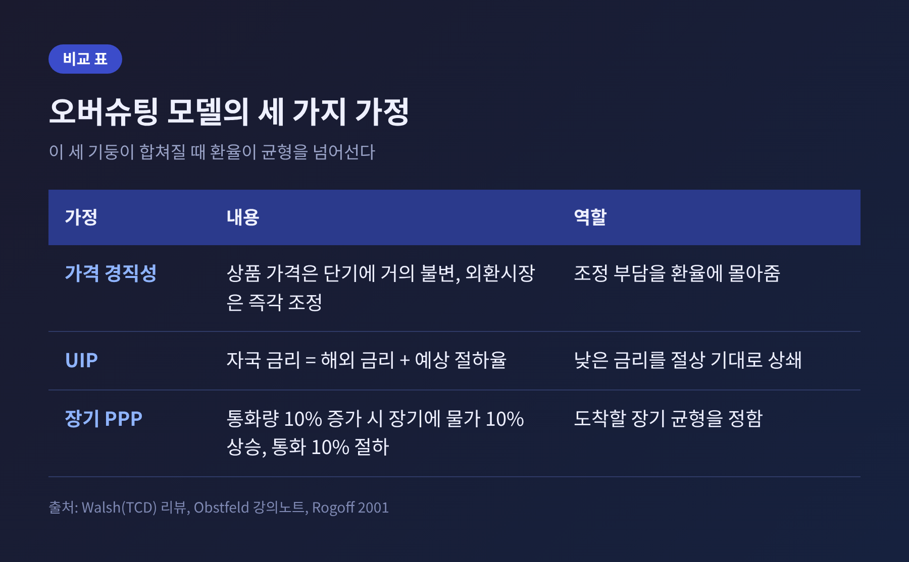
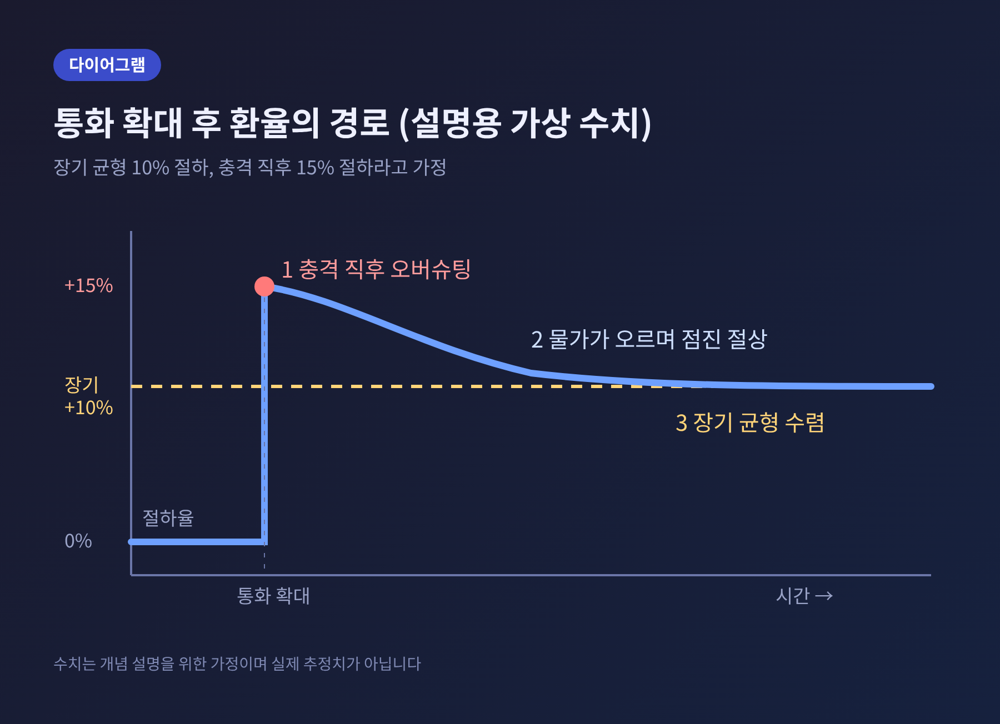
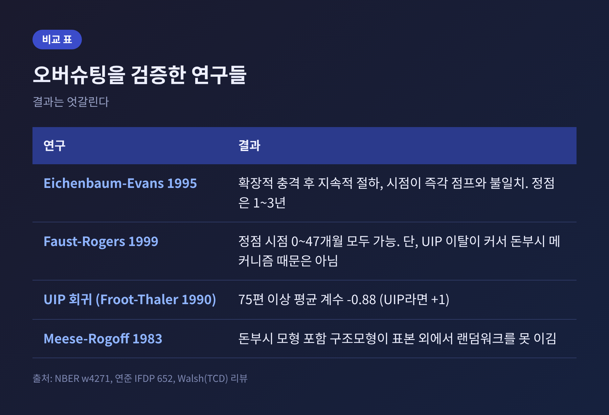
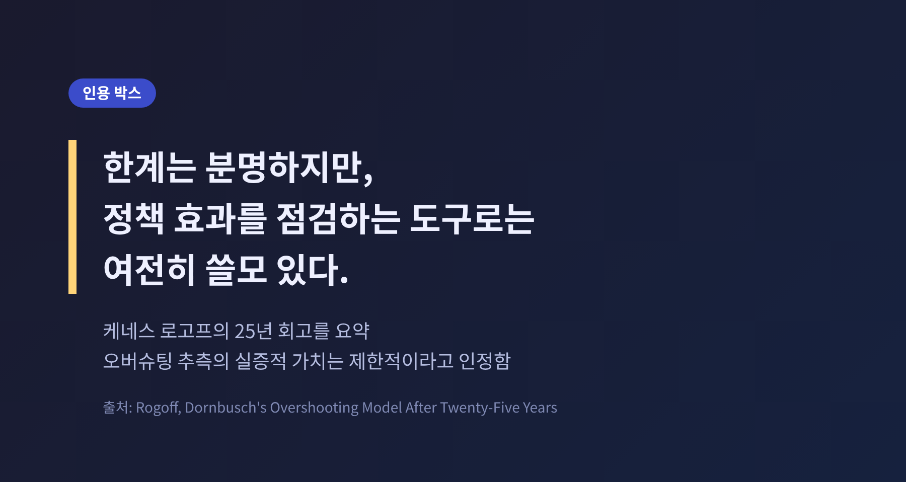

오늘은 돈부시 환율 오버슈팅 모델에 대해 이야기해 보려 합니다. 통화정책이 바뀌면 환율은 장기 균형 수준을 넘어 먼저 튀었다가 서서히 돌아온다는 것이 이 모델의 핵심입니다. 그 이유는 물가는 느리게, 환율은 빠르게 움직이기 때문입니다.
루디거 돈부시(Rüdiger Dornbusch)는 1976년 「Journal of Political Economy」 84권 6호에 "Expectations and Exchange Rate Dynamics"를 발표했습니다. 변동환율제로 넘어간 뒤 환율이 예상보다 훨씬 거칠게 움직이던 시기였습니다.
돈부시의 답은 단순했습니다. 환율이 불안정한 것은 시장이 비합리적이어서가 아니라, 서로 속도가 다른 시장이 한 경제 안에 있기 때문이라는 것입니다.
그는 1942년 독일에서 태어나 시카고대에서 박사 학위를 받았고, 1975년 MIT에 합류했습니다. 2002년 7월 별세했을 때 케네스 로고프 당시 IMF 수석이코노미스트는 이 논문을 "제2차 세계대전 이후 국제경제학에서 가장 영향력 있는 논문"이라 평가했습니다. 로고프의 2001년 회고에 따르면 1976년부터 2001년까지 이 논문을 인용한 게재 논문은 917편에 달합니다.

모델은 세 개의 기둥 위에 서 있습니다.
첫째는 가격 경직성입니다. 상품과 서비스의 가격은 단기에 거의 움직이지 않습니다. 반면 외환시장 같은 자산시장은 즉각 반응합니다. 로고프는 국내 물가를 두고 "바위의 심전도"처럼 느리다고 표현했습니다.
둘째는 비커버 금리평가, 이른바 UIP(uncovered interest parity)입니다. 자국 금리는 해외 금리에 예상 절하율을 더한 값과 같다는 조건입니다. 자국 금리가 해외보다 낮다면 투자자가 그 자산을 들고 있을 이유는, 자국 통화가 오를 것이라는 기대뿐입니다.
셋째는 장기 구매력평가(PPP)입니다. 통화량이 10% 늘면 장기적으로 물가가 10% 오르고, 통화 가치도 10% 내려 새 균형에 닿습니다.

통화 공급이 예상치 못하게 영구적으로 늘어난 상황을 가정하겠습니다. 모델은 다음 순서로 흘러갑니다.
바로 이 논리적 필연이 오버슈팅입니다. 환율은 충격 직후 장기 균형을 지나쳐 튀고, 이후 되돌아옵니다.
이해를 돕기 위해 가상의 숫자를 놓아 보겠습니다. 통화량이 10% 늘어 장기 균형이 10% 절하라면, 충격 직후 환율은 15% 절하까지 갈 수 있습니다. 금리 하락으로 연 4%p 정도의 금리 차가 생겼다면 연 4% 안팎의 절상이 기대되고, 15%에서 10%로 내려오는 길이 곧 그 절상입니다. 이 숫자는 설명용 가정이며 실제 추정치가 아닙니다.
복귀의 동력은 물가입니다. 실질환율이 약해지면 수요가 늘고, 필립스곡선을 따라 물가가 서서히 오릅니다. 실질 통화량이 줄면 금리는 해외 수준으로 돌아오고, 환율의 이동도 멈춥니다.

가격이 완전히 신축적이라면 환율, 물가, 통화량이 한꺼번에 같은 비율로 움직이므로 오버슈팅은 없습니다. 가격 경직이 결과를 만드는 셈입니다.
수학적으로는 화폐수요의 소득 탄력성 φ와 총수요의 상대가격 민감도 δ의 곱이 1보다 작을 때(φδ < 1) 오버슈팅이 나타납니다. 이 곱이 1보다 크면 언더슈팅도 가능합니다. 로고프도 오버슈팅이 보장된 결과는 아니고 모수에 달려 있다고 말했습니다.
그럼에도 기본 결과는 꽤 견고합니다. 칠레 중앙은행의 2006년 워킹페이퍼는 물가목표제를 갖춘 신케인지안 모형, 즉 가격을 평균 1년에 한 번 바꾸는 설정에서도 환율이 장기 균형을 넘어선다고 보고했습니다. 언더슈팅은 통화 확대 후 금리가 오히려 오르거나 위험프리미엄이 크게 변하는 비현실적 조건에서만 나타났습니다.
모델은 우아하지만, 데이터와의 만남은 순탄하지 않았습니다.
지연된 오버슈팅. Eichenbaum과 Evans(1995)는 미국의 확장적 통화충격이 명목·실질환율의 크고 지속적인 절하를 낳는다는 점을 확인했습니다. 다만 그 절하의 시점이 돈부시의 즉각적 점프와 달랐습니다. 이후 VAR 연구들은 정점이 충격 후 1~3년에 온다고 보고했습니다.
식별 가정의 문제. Faust와 Rogers의 연준 논문은 식별 가정을 느슨히 하면 정점이 미국-영국 기준 1~35개월(7변수 모형), 0~47개월(14변수 모형) 어디든 가능하다고 보였습니다. 지연 오버슈팅이 견고하지 않다는 뜻입니다. 다만 정책충격 뒤 UIP 이탈이 최소 약 20bp 이상으로 커서, 이른 정점이 있더라도 돈부시의 메커니즘 때문은 아니라고 결론지었습니다.
UIP 자체의 부진. Walsh의 리뷰에 따르면 UIP가 맞다면 회귀계수는 +1이어야 하지만, Froot와 Thaler(1990)가 75편 이상의 추정치를 모은 평균은 -0.88이었습니다. 캐리트레이드의 초과수익 5~6.5%는 위험프리미엄과 시장 마찰을 시사합니다.
예측력. Meese와 Rogoff(1983)는 돈부시 모형을 포함한 어떤 구조모형도 표본 외 예측에서 랜덤워크를 이기지 못했다고 밝혔습니다.

장기 균형으로 돌아온다는 주장은 얼마나 설득력이 있을까요. Lothian(1997)은 OECD 23개국의 1974~91년 자료에서 단기 이탈은 크지만 3~6년 시계에서는 PPP를 기각하지 못했다고 보고했습니다. 실질환율의 반감기는 3~5년으로 추정됩니다. 돈부시가 말한 '서서히 돌아온다'가 달력으로는 꽤 긴 시간이라는 뜻입니다.
Bjørnland(2009)는 장기 PPP를 명시적으로 부과하면 소규모 개방경제 4곳(1983~2004)에서 지연 현상이 사라지고, 최대 오버슈팅이 첫 2분기 안에 나타난다고 보고했습니다. 반면 Pippenger(2009)는 충격반응 증거 자체가 결함이며 환율이 마팅게일에 가깝다고 반박했습니다. 어느 한쪽이 결판을 낸 상태가 아닙니다.
정리하면 이렇습니다.
로고프는 25년 회고에서 이 모델이 볼커와 대처의 디플레이션 같은 주요 통화정책 전환점은 잘 포착하지만 다른 큰 환율 변동은 놓친다고 평가했습니다. 오버슈팅 추측의 실증적 가치는 "상대적으로 제한적"이라고 인정하면서도, 통화정책의 영향을 빠르게 점검하는 도구로는 여전히 쓸모 있다고 보았습니다. 회고의 마지막 문장은 "돈부시 모델이여, 영원하라"였습니다.
이 글에서 확인한 내용은 환율을 맞히는 예측법이 아닙니다. 투자 판단의 근거로 삼을 수 있는 이야기도 아닙니다. 속도가 다른 시장이 만나면 가격이 어느 한쪽에서 과하게 움직일 수 있다는 구조를 이해하는 틀입니다.

결국 남는 것은 하나입니다. "느린 시장이 못 움직이는 만큼, 빠른 시장이 대신 더 움직인다."
뉴스에서 금리 인하 직후 환율이 급하게 움직이는 장면을 보신다면, 그 뒤편에 느리게 걷는 물가와 빠르게 뛰는 환율의 시차가 있다는 점을 한 번쯤 떠올려 보시길 권합니다.